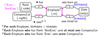
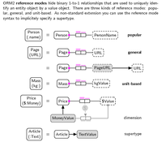

tkz-orm is a LaTeX package to draw Object-Role Model (ORM) diagrams. With tkz-orm you can “program” ORM2 diagrams just as you “program” your document when you use LaTeX. tkz-orm is based on the pgf and TikZ graphic system for TeX.
See tkz-orm.pdf for a documentation of tkz-orm.
The latest package release is available at CTAN. See the file README for installing instructions.
You can also clone the project with Git by running:
$ git clone git://github.com/nichtich/tkz-orm
The lastest development version can be downloaded in either zip or tar formats.
Source files are included in the examples directory. Contributions are welcome!
 [TEX] [PDF] [PNG] author |
 [TEX] [PDF] [PNG] employee |
 [TEX] [PDF] [PNG] reference modes |
To generate PDF and PNG files, get the project tree and call
$ make examples
Feel free to fork tkz-orm — as specified in the LICENSE file you can select the GPL, the LPPL or both. The documentation is also available under CC-BY-SA and GFDL.
Jakob Voss (jakob@nichtich.de)
{kind=link}
{kind=link}